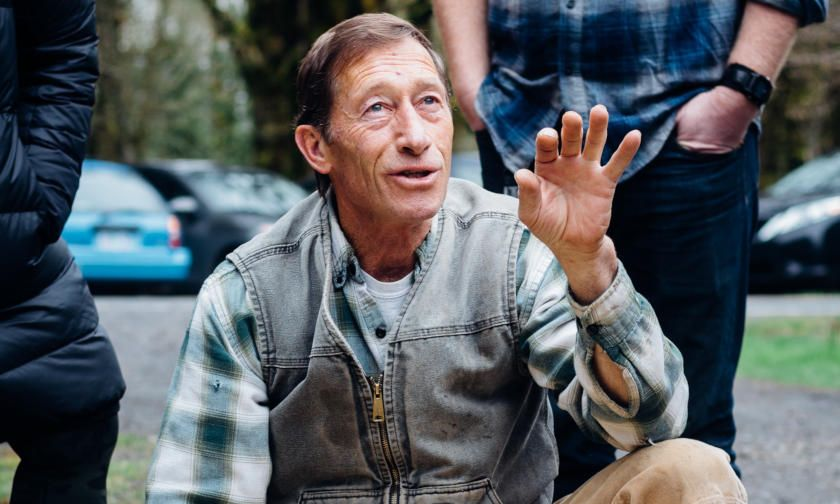
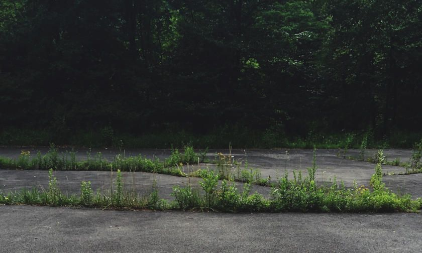
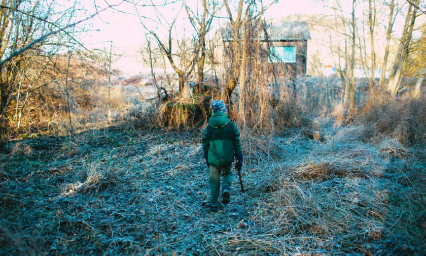

The outdoors has proven to be an effective learning environment for children, but, for teachers and parents with little experience teaching in this environment, it may be confusing to get started. In this guide, we will address this issue and show you how to select and create the perfect outdoor learning space.
Words Matter
According to recent reports , the terms “ Outdoor Learning ” and “Forest School” are becoming more popular, and those who have explored these avenues have learned how much this form of learning engages and motivates young children.
Unfortunately a report by Tash Niman and Anita Kerwin-Nye called ‘ Work on the Wild Side: Outdoor Learning and Schools ’ suggested that teachers haven’t been as motivated to use outdoor classrooms. It was found by Natural England that by just changing the title from an outdoor classroom to an outdoor learning space, and altering the attitudes of senior leaders to support outdoor learning within schools, gives confidence to teachers in taking children outside. The best classroom and the richest cupboard are roofed only by the sky - Margaret McMillan Some people look at the ‘outdoors’ itself as the learning space, but for the purpose of this guide, an OLS is an area of a school or a garden which is outdoors and is adapted to support a child’s learning and curiosity.
Outdoor Learning Spaces can be costly or without cost at all. The most important thing is creatively transforming a suitable space into an effective and exciting learning resource. Before you start, there are some important things to keep in mind.
Considerations on a Managerial Level
Integrating outdoor learning within the curriculum
Make sure that it is planned by identifying parts of the curriculum that naturally lend themselves to outdoor learning. The expectation for staff is that those chosen topics/areas will be outdoor learning experiences. To simplify, the topic must be: Planned-Expected-Natural.
Cultural Change within the School
Identifying the school’s culture and communicate the story to others within your school. Making sure that your shared expectations and vision is aligned, so that you can make it part of your cultural needs. It needs to be repeated and the story retold on a continual basis. The words below explain how this approach has to be repeated and it is also vital for everyone to buy into it for the approach to be used.
- We are experts in outdoor learning…
- We embrace every outdoor learning opportunity we have within this school…
- Outdoor learning is a vital part of growing up…
Retelling the story will keep it fresh and believable, but on the flip side of telling that story, you may become complacent and not believe in it anymore. It therefore may require a revised story to reinforce the message. Great stories happen to those who can tell them - Ira Glass
Personal Development - Review Cycle
These learning spaces open up new potential responsibilities and development areas, either by focusing on awards like Eco-Schools and Royal Horticultural Society (RHS) - School Gardening , or look at developing an approach to outdoor learning with the school. If outdoor learning is truly part of the school’s culture, then it will be important enough to incorporate this into the performance review cycle.
Training of Staff
If you are truly invested in outdoor learning then time and effort will be devoted to training your staff to an appropriate degree. There are three main methods to do this:
- External Qualifications - Introduction to outdoor learning through to Forest School Leader (level 3)
- Internal Training - This offers a more bespoke training option as an experienced member of staff will focus the training only on areas relevant to the school.
- Research Led Development - This would incorporate trialling different approaches to outdoor learning and feeding back to a group of peers. Successful approaches can be incorporated into the main curriculum.
Considerations when Planning an OLS
Deciding where On-site to have an OLS
Being aware of areas of your school that are either untouched or used as a dumping ground could be prefect for an OLS. Some schools may have lots of little areas, which could be turned into individual little subject areas (I.e. only enough space for three planters - flowers beds, enough space for a fire pit). Equally, a school with lots of space might become overwhelmed, not knowing where to start. In this circumstance, you should either have a blank surface (section of grass/playground) or use areas that naturally lend themselves to the cause. Look for untouched or wild spaces
Deciding where Off-site to have an OLS
If your school does not have anywhere for an OLS to go, then you might have to think of an alternative area off-site. Before you make that leap, decide whether you have transport to go further afield or whether you can only walk to an off-site OLS. This will determine where your OLS will be situated.
A number of paths to try might be:
- Joining up with another school (joint effort to create an OLS/on their land or off-site venture)
- Use (rent) a woodland
- Speak to the council about creating an OLS in a nearby park/or disused area in the city/town
- Speak to local youth groups, sports clubs and organisations (create on their land)
Another overall consideration is that do the above pathways have sheltered areas, toilet facilities and also a water source.
Who will use this OLS
Make sure you know who intends to use this resource,
- whole school
- a select number of classes
- visiting schools
Having an awareness of foot traffic will give you a better understanding of how to minimise the impact of the OLS when in the design phase. Also consider other streams like physical and special needs, so that the OLS has a more inclusive sustainable design.
How will the OLS be used
In order to understand this you will need to have an understanding of how outdoor learning naturally falls into each core subject. This process is essential in the design phase and once done, a focus group will then draw out what sections (e.g. fire pit, wild spaces, ponds etc) will be needed for the core subjects.
Once the essential sections have been discussed and agreed, the final stage in making your design effective is to speak to experienced outdoor practitioners, other schools who have created OLS, and your own pupils to see if there is anything that is needed to be considered.
Planning an OLS
If you are at this stage in planning your OLS, then you should have:
- Considered subjects that naturally lend themselves to outdoor learning (OL)
- Continually told your story of the benefits OL has on the pupils to your staff
- An awareness to incorporate OL into the performance review cycle
- Looked at staff training to increase confidence and skills around OL
- Decided what area/s to have your OLS (on-site or off)
- Understood who will be using it and how it will be used
Make sure all the steps have been thought about and exhausted before moving onto the design phase
Design an OLS
After the focus groups have revealed the essential sections and you have spoken to experienced outdoor practitioners, other schools, and your own pupils, you will now have a clear aim as to what the OLS is going to achieve.
- Design everything in the area (draw the essential sections within it - create a number of designs that focus on movement/traffic within the OLS)
- Phases: What is essential - (Fire area, storage (wood/tools), fences, reflective zone, shelter, work spaces, sensory elements etc) Split areas/boundaries up into phases and either build, raising funds or collect equipment/materials over time
- Cost-cutting: Log store - free (pallets), fire area - logs and stumps (seating/fire square), speak to pallet companies, local council/ arbtalk (logs, stumps, brash, and chip)
- Charitable donations/discounts - Speak to local DIY stores to see if you can get materials and tools given to the OLS project even discounted - remember to always spread their good will
Using the OLS
Once you have created your OLS, managing and maintaining it is essential.
- Do your teachers feel comfortable knowing how to use the area? (training)
- Continual support for your team of staff
- Create a rota for classes
- Have scheduled group meetings to find out how the OLS is actually being used and what is working and equally what is not.
When going through the four steps, make sure each step has been successfully completed. They are all important steps, but the first step has to be continually active in order for the other steps to be effective. This project of creating an effective outdoor learning space can’t be looked at as a ’tick boxing’ exercise, but a commitment from everyone at that school/establishment in achieving a prolonged and effective outdoor learning space. Let’s do this right, lets provide great resources to allow pupils to leave the classroom and experience great learning opportunities outside.